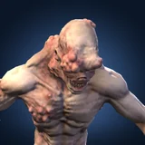

Unit
Hollow Singer
Hollow Singer is a tier 3 caster unit of the Sundered, Riftborn and Arcanist alliances.
Hollow Singer is a tier 3 (Rare) caster unit. It costs 3 gold in the shop and carries the Sundered, Riftborn and Arcanist alliances.
Ability
Null Hymn
Opens a pocket of nothing around the target that deals pure damage over time to it and enemies next to it.
- Cast
- When mana is full. Casting spends all of it.
- Cast point
- 0.5 seconds from the start of the cast to its effect.
- Targets
- Its current target and all enemies within 1 cell of it.
- Applies Unravelling (60 / 90 / 140 pure damage taken per second, -50% movement speed) to the targets for 5 / 7 / 9 seconds (values per star).
Full details are on the Null Hymn ability page. See Mana and casting for how mana is gained.
Stats
| Stat | 1 star | 2 stars | 3 stars |
|---|---|---|---|
| Health | 900 | 1,800 | 4,320 |
| Attack damage | 35 to 50 | 70 to 100 | 168 to 240 |
| Seconds per attack | 1.5 | 1.5 | 1.5 |
| Attacks per second | 0.67 | 0.67 | 0.67 |
| Wind-up before the hit (seconds) | 0.4 | 0.4 | 0.4 |
| Average damage per second | 28.3 | 56.7 | 136 |
| Attack range (cells) | 3 | 3 | 3 |
| Armour | 5 | 5 | 5 |
| Magic resistance | 40% | 40% | 40% |
| Maximum mana | 100 | 100 | 100 |
| Move speed | 290 | 290 | 290 |
| Seconds to cross one cell | 0.44 | 0.44 | 0.44 |
| Projectile speed (cells per second) | 7 | 7 | 7 |
Seconds per attack is the time from the start of one attack to the start of the next, before any attack speed bonus. Average damage per second is the middle of the damage range divided by the seconds per attack, before armour, bonuses and critical strikes.
Cost, upgrades and selling
3 copies of Hollow Singer at the same star level combine into one copy of the next star level, up to 3 stars. See Star upgrades for how combining works and Gold and income for gold.
| 1 star | 2 stars | 3 stars | |
|---|---|---|---|
| Copies needed | 1 | 3 | 9 |
| Gold to buy those copies | 3 | 9 | 27 |
| Sell value in gold | 3 | 5 | 7 |
| Copies returned to the pool when sold | 1 | 3 | 9 |
The shared pool holds 18 copies of Hollow Singer for all players together, as it does for every tier 3 unit. See The shared pool and The shop.
Alliances
 Sundered class
Sundered class
Touched by the nothing at the spire’s heart. Every allied unit’s attacks have a 40% chance to deal 4% of the target’s maximum health as pure damage, at most once every 0.5 seconds.
| Units needed | Effect |
|---|---|
| 3 | When an ally lands an attack (40% chance; at most once every 0.5 seconds), it deals pure damage to the unit it hit equal to 4% of the target's maximum health. Allies summoned later in the fight get this too. |
 Riftborn race
Riftborn race
Things that crawled out of the cracks in the spire. When a Riftborn unit dies it leaves behind a Rift Echo that fights on. Echoes are not Riftborn.
| Units needed | Effect |
|---|---|
| 2 | When a Riftborn unit dies, it summons a Rift Echo in the nearest free cell. |
| 4 | When a Riftborn unit dies, it summons a Greater Rift Echo in the nearest free cell. |
 Arcanist class
Arcanist class
Scholars of the broken wards. All enemies lose magic resistance, so they take more magical damage.
| Units needed | Effect |
|---|---|
| 3 | All enemies: -35% magic resistance. Enemies summoned later in the fight get this too. |
| 6 | All enemies: -70% magic resistance. Enemies summoned later in the fight get this too. |
How units are counted towards a step is explained under How alliances count.
Fights well with
These units share an alliance with Hollow Singer, so fielding them together works towards the same steps.


Other tier 3 units
The other tier 3 units. They cost the same and share the same tier odds. Within the tier, a unit with more copies left in the pool is offered more often. See The shop and the Unit stat table.
 Ashen Abbess
Ashen Abbess Ashwalker
Ashwalker Briar Shaper
Briar Shaper Cinder Hatchmother
Cinder Hatchmother Clockwork Savant
Clockwork Savant Ember Duelist
Ember Duelist Fen Mystic
Fen Mystic
Gnawing Wight Moonless Alpha
Moonless Alpha Pack Warden
Pack Warden Soul Reaper
Soul Reaper Spire Marksman
Spire Marksman Tidal Stalker
Tidal Stalker